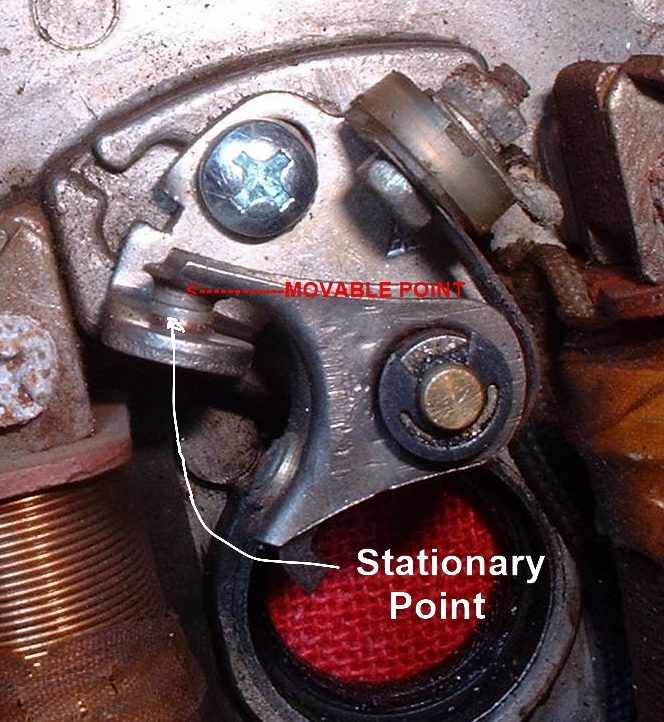
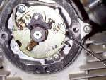

Bikes with contact breaker points slowly lose timing and spark quality as the points wear. The engine gets hard to start, runs roughly, misfires or loses power, or the spark fails altogether. If there is a small cover on the engine that hides a cam and a pair of contacts, your bike has points.
Is it safe to ride?
A rough or missing engine can be ridden slowly and carefully. If there is no spark, it will not run at all.
Quick checks first
- Is the plug clean and the cap on firmly?
- Is the battery charged (battery-and-coil bikes)?
- Is the kill switch on RUN?
- When were the points last changed? They drift out of time in a few thousand kilometres, though some last much longer.
Diagnose it step by step
1Remove the points cover and look at the faces.
- Heavy pits, a peak of metal on one face, or burnt dark faces: points are worn. Replace them: Inspect, clean and replace contact breaker points.
- Clean and smooth: go to step 2.
2Look for oil, rust or a loose wire at the points.
- Oil or grease on the faces stops the spark. Clean with acetone.
- Rust or black film from standing: clean lightly, then replace if it does not improve.
- Loose or chafed wire: refit or replace it.
3Check the gap at full lift and the timing.
- Gap outside the manual's range, or timing off: Set points gap and ignition timing (battery and coil) or Set points timing on a flywheel magneto.
4Do the points burn or pit again soon?
- Yes: test the condenser: Test an ignition condenser.
- No: go to step 5.
5Is the heel worn?
- Points that look fine but the engine still has no spark: the heel that rides the cam may be worn. A new set is the cure.
6Check the advance unit.
- On a battery-and-coil engine, the automatic advance behind the points plate should move freely. A stuck unit gives wrong timing at speed.
Causes, most likely first
| Cause | How to confirm | Fix |
|---|---|---|
| Worn points | Pits, peak, burnt faces | Inspect, clean and replace contact breaker points |
| Wrong gap or timing | Gap outside range, mark off | Set points gap and ignition timing |
| Failed condenser | Points burn again; no spark in the test | Test an ignition condenser |
| Oil or dirt on the faces | Wet or dirty faces | Clean with acetone |
| Weak coil | Spark weak with good points | Test the ignition coil and plug cap |